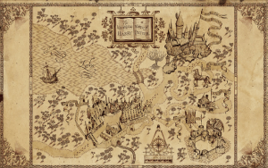

Présentation APP Showroom

Le projet avait pour contexte à l'origine de créer une carte du maraudeur tirer de la célèbre série littéraire Harry Potter. Peu à peu, on a dut établir un contexte un peu plus en accord avec une problématique réelle. Pouvoir détecter une personne peut avoir plusieurs intéret, comme par exemple activer des applications ou jouer à des jeux en détectant la présence et la position du joueur afin de pouvoir intéragir sur le jeux. Enfin, afin de rendre le système non intrusif, nous avons envisagé qu'aucun objet ne devrait être porter par l'utilisateur

Les objectifs sont: